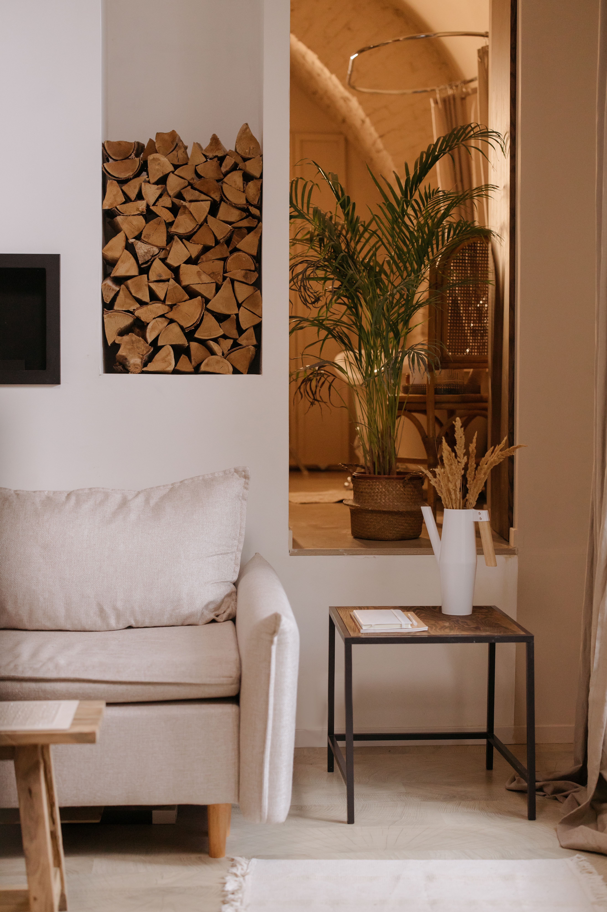
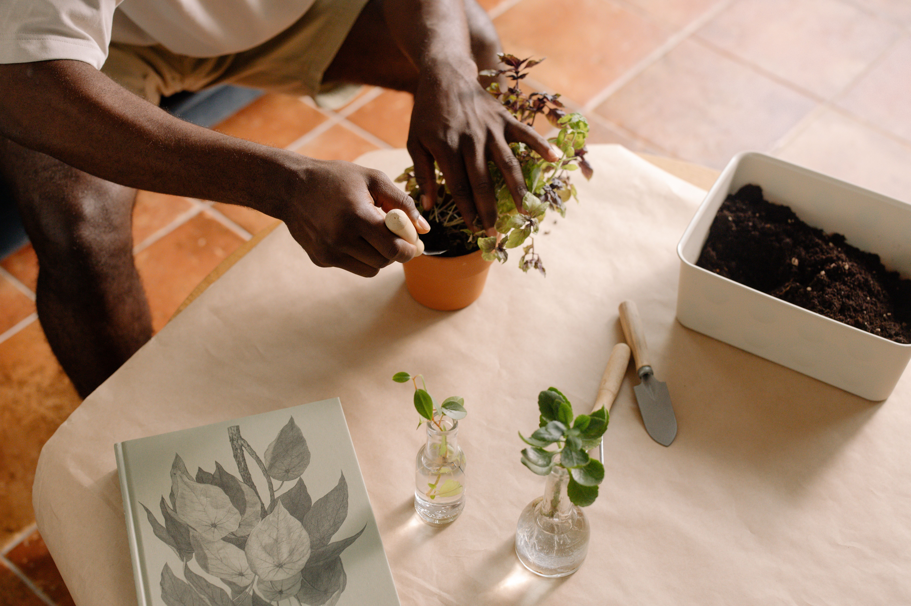

In This Article
- Introduction
- Understand Your Regional Climate
- Look Beyond Average Temperatures
- Study Rainfall and Seasonal Moisture
- Consider Humidity and Air Movement
- Evaluate Sun Exposure and Microclimates
- Choose Plants for Cold Conditions
- Choose Plants for Hot Conditions
- Adapt to Dry Climates
- Adapt to Humid and Rainy Climates
- Consider Wind Exposure
- Use Local and Well-Adapted Species
- Plan for Seasonal Changes
- Match Plants to Soil and Drainage
- Test Before Planting on a Large Scale
- Common Mistakes to Avoid
- Frequently Asked Questions
- Create a Climate-Based Plant List
- Create a Climate-Based Plant List
- Create a Climate-Based Plant List
- Create a Climate-Based Plant List
- Conclusion
Introduction
Choosing plants according to the climate of your region is one of the most reliable ways to create a garden that is easier to maintain and more resilient over time. Temperature, rainfall, humidity, wind, seasonal variation, and the length of the growing season all affect how plants establish and perform.
The objective is not to find plants that survive only under ideal conditions. It is to identify species whose normal needs are reasonably compatible with the environment where they will grow. Plants that match the climate generally require fewer emergency interventions, less constant protection, and fewer changes in watering or location.
Understand Your Regional Climate
Start with the broad characteristics of your region. Consider typical summer and winter temperatures, annual rainfall, dry and wet seasons, humidity, and whether frost, heat waves, or strong winds occur regularly.
Regional information provides a useful starting point, but it should not be treated as a complete description of your garden. Two properties in the same city can have different conditions because of altitude, orientation, surrounding buildings, vegetation, and proximity to water.
Use local gardening references, botanical gardens, nurseries, or agricultural information when available. Seeing which plants perform well in nearby landscapes can provide practical clues about what is naturally adapted to the area.
Look Beyond Average Temperatures
Average temperatures can hide the extremes that often determine whether a plant succeeds. A region with mild averages may still experience occasional frost, very hot afternoons, or sudden cold spells.
Check the lowest and highest temperatures that occur in a typical year, and note how often those extremes appear. A plant that tolerates an occasional cool night may not tolerate repeated freezing conditions.
Container plants can be more exposed to temperature extremes because their roots are surrounded by a limited volume of growing medium. The same species may need more protection in a pot than when established in the ground.
Study Rainfall and Seasonal Moisture
Total annual rainfall is only part of the picture. The timing of rain matters. A region may receive significant annual rain but still experience a long dry season when plants depend on irrigation.
Observe how quickly your soil dries after rain and whether water collects in low areas. Plants adapted to dry climates can suffer in persistently wet soil, while moisture-loving species may struggle where water drains rapidly and rainfall is irregular.
When choosing plants, compare their natural moisture preferences with the conditions you can realistically maintain. A garden that depends on constant corrective watering can become difficult to sustain.
Consider Humidity and Air Movement
Humidity affects how quickly plants lose water and how easily certain fungal problems develop. A plant that performs well in a dry inland climate may respond differently in a warm, humid coastal area.
Good air movement can help leaves dry after rain, but strong continuous wind increases water loss and can damage tender foliage. Consider humidity and wind together rather than as separate factors.
Dense planting in a humid climate may require more careful spacing. Allowing enough air circulation can improve plant health and make inspection easier.
Evaluate Sun Exposure and Microclimates
The climate of the region does not determine how much sun every part of your garden receives. Buildings, walls, trees, slopes, and fences create microclimates with different temperatures and light levels.
A south- or west-facing wall in the Northern Hemisphere, or an equivalent sun-exposed orientation in the Southern Hemisphere, can become significantly warmer than an open shaded area. Dark paving and masonry can also store heat and raise local temperatures.
Observe direct sun at different times of day before planting. A species described as suitable for the regional climate may still fail if it is placed in the wrong microclimate.
Choose Plants for Cold Conditions
In regions with frost or freezing winters, select plants with cold tolerance appropriate for the conditions. Consider not only foliage but also roots, buds, young stems, and flower timing.
Cold-hardy plants still need suitable soil and drainage. Winter wetness can damage some species even when the air temperature is within their tolerance range.
When using tender species, decide in advance whether they will be treated as seasonal plants, moved to protection, or given temporary cold protection. Do not rely on emergency measures every year without a realistic plan.
Choose Plants for Hot Conditions
In hot climates, heat tolerance and water efficiency become major factors. Plants adapted to intense sun often have leaves, roots, or growth habits that help them manage heat and moisture loss.
However, heat tolerance does not always mean drought tolerance. Some tropical plants tolerate high temperatures but still need consistent moisture.
Provide the light level the species needs. A plant that tolerates regional heat may still scorch if it is suddenly moved from shade into intense direct sun.

Adapt to Dry Climates
Dry-climate gardens benefit from plants that can manage long periods with limited water once established. Many Mediterranean plants, succulents, and drought-adapted shrubs are examples, but suitability depends on local winter conditions and soil.
Group plants with similar water needs. This makes irrigation more efficient and reduces the risk of overwatering dry-adapted species while trying to support thirstier plants nearby.
Mulch can reduce surface evaporation where appropriate, but it should be used in a way that suits the plant and does not trap excessive moisture around sensitive crowns.
Adapt to Humid and Rainy Climates
In humid or rainy regions, drainage and air circulation become especially important. Choose plants that can tolerate the moisture pattern rather than assuming every moisture-loving plant will thrive in saturated soil.
Raised beds, improved drainage, or careful plant placement can help where the site remains wet after storms. However, large drainage problems should be addressed at the site level rather than hidden with plant selection alone.
Regular inspection can help identify fungal or pest problems early. Avoid overcrowding and keep pruning appropriate to the species.
Consider Wind Exposure
Wind can break branches, dry leaves, destabilize containers, and increase irrigation demand. Coastal wind may also carry salt, which only certain plants tolerate well.
Use sturdy species and appropriate supports in exposed gardens. Windbreaks can reduce stress, but solid barriers can create turbulence, so their design should suit the site.
For container plants, choose stable pots with enough weight and a broad base. Avoid placing tall plants where they can become unsafe during strong winds.
Use Local and Well-Adapted Species
Plants native to your region or well established in similar climates can be easier to manage because they are already suited to local seasonal patterns. This does not mean every native species is appropriate for every garden position.

Check mature size, soil preference, light needs, and growth habit before planting. A locally adapted tree can still be a poor choice beside a wall if its mature canopy or roots exceed the available space.
Well-adapted non-native species can also perform reliably when their needs match the climate and they are not invasive in the region.
Plan for Seasonal Changes
A garden should be evaluated across the year rather than in one season. Some plants look dormant in winter and become dominant in summer, while others flower briefly and then contribute mainly through foliage or structure.
Combine evergreen structure with seasonal interest where appropriate. This can keep the garden balanced even when flowering periods change.
Keep notes through the seasons. Recording frost damage, heat stress, flowering, and water demand can make future plant choices more accurate.
Match Plants to Soil and Drainage
Climate and soil work together. A drought-tolerant plant may still fail in heavy soil that remains wet during winter, while a moisture-loving plant may struggle in very sandy soil that dries quickly.
Before planting, observe texture, drainage, compaction, and organic matter. If necessary, improve the planting area according to the needs of the selected plants.
Avoid changing the soil so radically that it creates a small isolated pocket with very different drainage from the surrounding ground. The entire root zone matters as the plant grows.
Test Before Planting on a Large Scale
When you are unsure how a species will respond, start with a small number of plants. Observe them through the hottest, coldest, wettest, and driest periods before repeating the choice across the entire garden.
This gradual approach reduces cost and helps you learn the microclimates of your property. A plant that thrives beside one wall may still fail in an exposed corner.
Common Mistakes to Avoid
Avoid choosing plants only because they look attractive at the nursery. Check mature size, climate tolerance, light, soil, and water needs first.
Do not assume all parts of a garden share the same climate. Shade, walls, slopes, wind, and paving create different conditions within a small area.
Avoid building a garden around constant emergency protection. If a plant requires frequent rescue from normal regional weather, a better-adapted species may be more practical.
Frequently Asked Questions
How do I know which plants are suitable for my climate?
Compare reliable information about temperature tolerance, rainfall, humidity, light, and seasonal conditions with the real conditions in your garden.
Are native plants always the best option?
They can be very useful, but each species still needs the right light, soil, space, and moisture conditions.
Can the same plant behave differently in two nearby gardens?
Yes. Microclimates created by buildings, elevation, wind, shade, and soil can produce very different growing conditions within the same region.
Should I avoid plants from other climates completely?
Not necessarily. Many non-native plants can perform well when their needs match local conditions and they are appropriate for the region.
Create a Climate-Based Plant List
Before visiting a nursery, divide potential plants into groups based on the conditions you can actually provide: full sun and dry soil, partial shade and moderate moisture, windy exposure, sheltered corners, or colder low areas. This turns climate information into a practical shopping list.
Keep the list flexible and update it after observing which plants perform well. Over time, your own garden records can become one of the most useful guides for future planting decisions.
Create a Climate-Based Plant List
Before visiting a nursery, divide potential plants into groups based on the conditions you can actually provide: full sun and dry soil, partial shade and moderate moisture, windy exposure, sheltered corners, or colder low areas. This turns climate information into a practical shopping list.
Keep the list flexible and update it after observing which plants perform well. Over time, your own garden records can become one of the most useful guides for future planting decisions.
Create a Climate-Based Plant List
Before visiting a nursery, divide potential plants into groups based on the conditions you can actually provide: full sun and dry soil, partial shade and moderate moisture, windy exposure, sheltered corners, or colder low areas. This turns climate information into a practical shopping list.
Keep the list flexible and update it after observing which plants perform well. Over time, your own garden records can become one of the most useful guides for future planting decisions.
Create a Climate-Based Plant List
Before visiting a nursery, divide potential plants into groups based on the conditions you can actually provide: full sun and dry soil, partial shade and moderate moisture, windy exposure, sheltered corners, or colder low areas. This turns climate information into a practical shopping list.
Keep the list flexible and update it after observing which plants perform well. Over time, your own garden records can become one of the most useful guides for future planting decisions.
Conclusion
Choosing plants according to regional climate starts with observation. Temperature extremes, rainfall patterns, humidity, wind, sunlight, soil, and seasonal changes all influence whether a plant will remain healthy with reasonable care.
Use regional information as a guide, then refine your choices according to the microclimates in your own garden. Plants that match both the climate and the site are usually easier to maintain and more resilient over time.